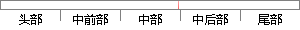

传统的建模方法：如动态时间规划、人工神经网络等，这些建模方法计算量较大，训练样本的时间较长，缺乏统计特性。
片段位置图

相似结果|
相似片段 1：的预测结果，这些问题对于传统的预测方法是难以解决的。近年来，灰色预测模型和人工神经网络模型用于非线性时间序列预测较为引人注目，其优点是它们在建模时都不需要计算统计特征，从理论上讲，可以适用于任何非线性
|
※ 片段修改建议 ※
近似词参考：- 方法：方式 要领 法子
- 时间：时候
- 规划：计划
- 方法：方式 要领 法子
- 计算：计较 较量争论 盘算
- 时间：时候
- 缺乏：缺少
- 特性：特征
系统自动生成语句：传统的建模方式：如动态时候计划、人工神经网络等，这些建模方式计较量较大，训练样本的时候较长，缺少统计特征。
注：本片段修改建议为系统自动生成，仅供参考。